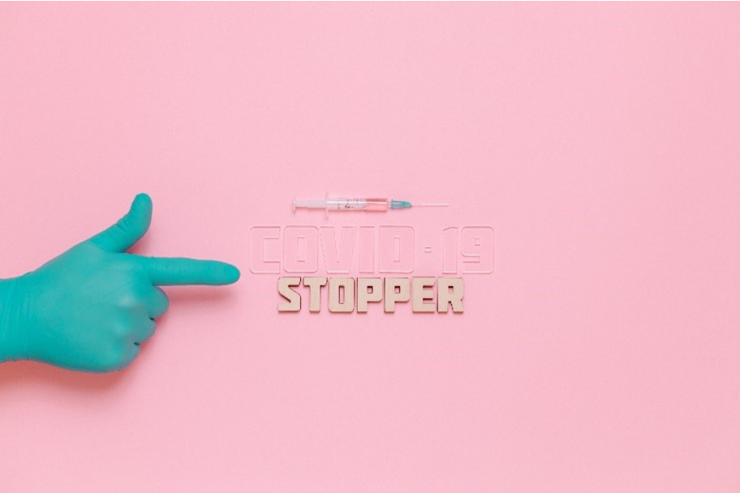
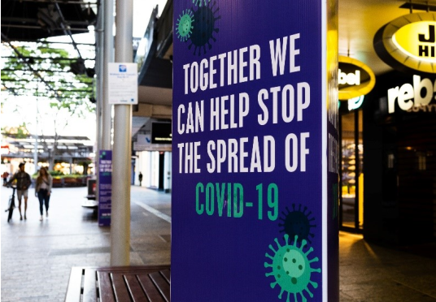
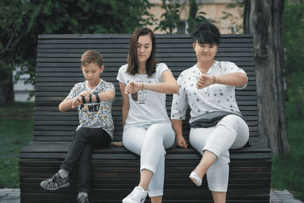
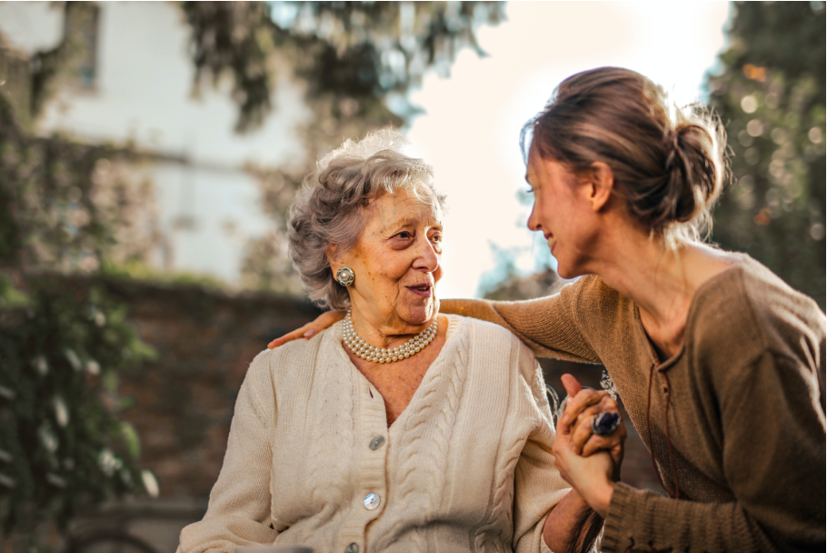
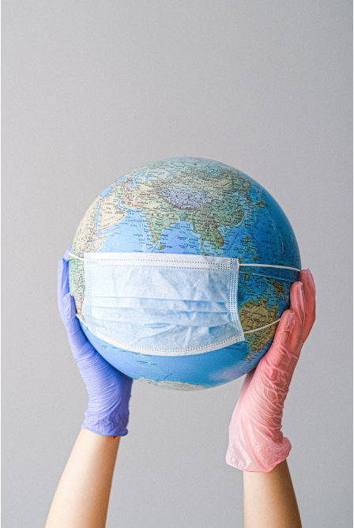

I recognised today the 5 Live guest speaker from the sound of her voice as Christina Pagel of UCL (this would be University College London as my best bet though could be University Cambridge Labs for instance). It is Christmas Eve and she was informing us of a new coronavirus variant from South Africa (note 1) while on her last time it was the South and South East mutation she was discussing. That was the one which has led to the cancelling of Christmas. That is what it has been called since most people had been expecting a 5 day window to meet relatives and it is now just 1 day in light of a faster spreading virus being discovered.
She confirmed also in her discussion with the radio host that you don’t catch the virus twice. So it is a good point that carriers are decreasing once they have had the illness. Yet the virus is spreading without emergency levels of lockdown which she had suggested on her 22-12-2020 date. It was her view of the necessary action. We have had 2,000,000 positive cases now (note 2) who should not be able to catch or pass on the virus again, but additionally have tested 50 million now who must be relieved their actions have not seen them exposed and catching the virus.
Still the virus does not want to go away. Lockdown is s admittedly leaving large work sectors’ quite economically active. Health, Food and certain Services are not stopping. To work in a safe manner alongside organised disease control a health passport (note a) is mentioned frequently as the solution. Is it the future or is it too difficult to keep up to date with information. We have not yet tested the whole population from the entire announcement of the first lockdown in March to now so I think cannot consider this so. A nationwide back to work option with a health passport seems to need too many tests to be banked upon.
Looking deeper at social, individual and health ideas at the end of nearly one year
Macro and micro
Can one inform about the other. Are there signs in what is happening in local or personal lives that can shed light on the difficult to follow data. Society in a pandemic and global lockdown, with numerous rules and changes has surely many trends hidden behind the large mobilising of people to behave as instructed in a different manner than usual.
link here to royalty free image at upsplash>

link to royalty free image at pexel.com

What trends can be seen and what tools for observation might be useful? Are theories with no explanation helpful at all to investigate or is it superstition. They still have origins which reflect anxiety and concern and a basis in the thoughts and actions of people. Continually we are reminded the medical and scientific basis of the government actions but also we know there is much conjecture and much uncertainty.
Question- What did the navy ships with coronavirus outbreaks early in the year that had not been in ports for months imply about the investigations of how the virus was carried?
Answer- (1)Theory. It is like a catalyst, a new discovery of an old connection.
(2) Pragmatic. Many of the questions raised still have no answers and we should be ready for alternative
solutions as well as actions.
The scientific speaker on the radio spoke a lot about the national lockdown in November not slowing down the spread of the virus in London and the S.East. This upon examination has been acted upon as a mutated virus that spreads more quickly. However, are the figures here accurate, is there a lapse in the data or ways of compiling it that misreads the actual situation? She spoke about how people may have been mixing more but that “why would it be this?"
I see the figures could themselves be being read to fit the desired picture and then not questioned enough in themselves, perhaps like a statistician would. Flattery of one set of figures leads to allow a new strain to be the more likely reason. I and many others saw there was a large hole in my perception of the month leading to the 2nd lockdown. Excluding London from local lockdowns that many cities were subject to seemed a policy without explanation. Come the national lockdown the reality could be that London was not really different before and now would mean it had not got such a low rate of infection as elsewhere, so it could not stop so easily or quickly in the same time window.
We could not stop it, can we stop the virus now the vaccine is here?
New strains, mutations and faster spread situations are all occurring but this would always have been the case. It is disappointing that a first and second lockdown have not removed the virus from circulation effectively enough. We have to have the vaccination or continued lockdowns for the foreseeable future on this pattern.
The hope before the new mutation of the virus (note 2) was that London was okay, it is a viable belief but should not be forgotten as also a fact that belief did not trump reality. Perhaps the whole virus had to mutate for several months to become and illness and that is how it was on warships otherwise completely isolated from the continental outbreaks. What did it do to get started, initially it was more than a theory that it jumped from wild food into a Chinese market in Wuhan. More than one animal species has since been identified as catching the virus. I think of big cats in zoos mentioned and the whole Mink population in Denmark then set for culling.
We are still operating on prevention to save lives and ‘protect the NHS’. This unprecedented threat is being treated with boxing gloves. Even the vaccine’s arrival and now in its’ 3rd week (note 3) with 520,000 vaccinations, it cannot stop social controls being the primary defence. We are operating defence as it is not understood. Only with a second or third faster vaccination process can we race more quickly towards achieving herd immunity at somewhere over 70%.
Basically we are stuck with lockdown or high social distancing practices for at least 3 months from now and then complicated international easing of restrictions. This is if we are successful which due to uncertainties we may not be. Covid-19 could even be the tip of the iceberg. We did not see it coming and have not explained its’ danger. Somewhere something else is happening, that obeys the laws of nature and yet has caused the paralysis of international trade, even war plans, global tourism and forced a shift in finance so far backed by governments but ultimately needs to have corporate agreement on future funding. It seems a triumph of the will to be so responsive together but far more than this we face a need to succeed without even retraining as yet for a non-profit economy. The cost of health is giant and may not really effect economically due to this virus but socially it is like a wake up call. Our approach to health is suddenly very integrated and for a long time now may affect travel and holidays at a minimum. To reduce the economic and social cost we need to make it pay for itself better as everything has had to stop that is outside of the bones of the modern state.
Internationally, locally, individually.
Question-What natural forces call all things to stop apart from biological functions
Answer- Could it be pollution, the equivalent in the environment to the small scale of the body.
As we have built and
connected agri-industry to the supermarket and the home it has been freeing us to work on anything commerce can pay
for. The veins and arteries of commerce however have not only carried health and vitality to us but pollution.
Is it like this virus perhaps.
To complement a lockdown for either the body or the sick world the medicine needs to be right, or else changing the practice is the other primary alternative leaving us stuck with unsustainable lockdown. Will we afterwards have to do anything differently. Is there is an to this global pandemic response. Can we get going again thanks to medicine. It is known the immune system for instance needs to be strong and that goes for the bigger picture too though is obvious and much more complicated in practice than the obvious. As we seem to be such a big player with the earth's ecosystem however pollution does seem to connect a lot of things especially towards biological organisms.
Having not slowed down the spread of coronovirus enough with lockdowns and the surrounding call for social responsibility (like being 2 metres apart and wearing breath masks) perhaps it is not an illness spreading by us, perhaps it is environmental. Perhaps a virus could anyway be considered envrionmental. Perhaps we are spreading it through contact but need to look elsewhere for a quicker solution for the next time. What in the environment then is it as a catalyst now to equate to a virus. Is it an event down only to the nature of coronovirus.
Question- why does a one in eighty infection rate not become 2 in eighty the next day? That is R (rate)=1
Answer- (1) Pragmatic.It would likely be due to social distancing including isolation and working from home.
(2) Theory. The rate of infection slows down but does not go away with a lockdown, yet it is still the strongest tool in the
social toolbox before direct medical intervention. Each time R is 1 or more or close is a very fast spread but 1 in 80 has
been mentioned several times in the last weeks as likely in some places. I think this could be the emergency bell being
rung. The maths of 1 in 80 people with R in one is only 6 days to the entire population being infected (note 4).
It increases in a back to
work situation so those either remaineding in work or those in lockdown must still pass a significant amount
of the virus. At a certain point R is greater than 1 again and another lockdown needs to be initiated. When the
physical number of infections is too high R cannot be ignored, it quickly compels social distancing of an impracticable
amount.
A healthy immune system has been easy to manage with modern health and nutrition accessible to most people, or in theory most people had access or use of this. A new virus would present a new challenge to this at some point and with the whole world connected this has been a concern to health officials anyway.
A giant social experiment, a world sized plaster on a nano sized virus
Q? Are we all thinker's now
Question- Do you think covid-19 showed the good side of people, for instance in helping each other?
Answer- No I think it did not. It showed we are not as bad as we think but need some convincing of this. I think we easily think well of others but are reticent to act. This is a lack of confidence and a lack of ability as our own lives tie us down. Work takes pretty much all motivation and free time. Before the earnings can pay the bills there is not much chance to step in on behalf of the welfare of others as it is a divisive struggle ourselves. I have heard this said rich or poor. Each seems tied down. Frequently a wealthy person complains bitterly about a poor persons’ freedom or even money, suggesting of course that the wealthy are the one’s who apply the squeeze but also that they are anxious about their own wealth, it seems vulnerable and all spent on the various ways to make it.
the usual poster photo from royalty photograph link at here upsplasher>

Question- Has the lockdown been respected?
Answer- In spirit yes but I think in practice no.
Much social mixing has been convenient and thus completely broken the rules. Household host guests who therefore meet and contact 10’s more people than those who are careful. Overall groups who mix can be 10’s of times more contagious and ruin the calculations. The general observation has been remarkable however, a true spectacle of grace and respect I think. This has been shown at the highest level where the government is able to organise and is bothered to do so.
Question- Is this year inevitable in some way as social policing or a pandemic?
Answer- I do think it might be close to that according to human responses either now or later. If we had not responded to this we might hardly have known as the medical establishment works quite independently with both secure and private funds. If the pandemic was as deadly as we hope it does not become by intervention then it would be inevitable but not an engineered response and more of a panic. Judging by how difficult this has been and how instantly global a panic would have been an extreme risk to take if it had been intentional. However we do not seem to be casting blame easily and in anger so look capable of a very high rate of mortality.
Mass control. Inevitable, natural or is helpful guidance best?
I believe this year is more socially engineered than inevitable. Certain decisions are made that experience and planning predict correctly. I think it is important to find out and understand which decisions matter and who can best judge or be involved. Especially if a person is not and would be willing to contribute why and how could this be done better.
Acting in harmony, order and orgainiser.
find this royalty free image in upsplash here

Many may not be connected enough but never be revealed. Many are also naturally doing things that reflect the wider events and initiatives. If the initiatives are not good then individually they are suffering lost opportunities at an increased rate mirrored socially. As within, without, that is the macro and micro I was mentioning. At a time like this when data and action is quickly effected, to have more sources and ideas yet less involvement is unfortunately common. Overall there is less happening though not in the usual way. We are more involved in the same things which but for a pandemic have meant more activity. We react in the same way as an individual with an illness by shutting down when medicine is inadequate. Society is meant to provide non-organic solutions too and over this length of time the economy is actually keeping us apart. Nations are cooperating with each other to manage a response that is largely using their public employees. As much as possible the whole remaining population has massive support packages to help them make it practical to stand down. Money has become obselete in a way due to the ability of governments to ignore us while commanding it this year.
advance for this, after all it is a virus but the national level of decision making is global. It is an illness which is the cause of all but many of the responses are similar to large social planning decisions and international effects are immediately massive. The plans are inadequate to most things barring a pandemic being that the citizen is being made economically useless. As this unexpected cause happens some of our local as well as international underlying tensions become more apparent rather than less (note b). Also new theories get legs while settled ideas that rest on their laurels now have weaknesses revealed. Many ideas are being nurtured at the moment and it seems that is all they are.
Alternatives are only ideas and actions are establishment protocol
Are ideas now like a vast array of superstitions. The control of the pandemic response is an opportunity to profit from the hard work of tax payers and their sacrificed membership payments in the trade unions could be called on to use up reserves. However the government is not doing this. It cannot do this without long term plans but really is inventing money that does not exist to pay for the shutdown of businesses to assist with preventing the spread of a virus.
Care close is best and trusting and responsible
Find this image here from pexel.com royalty free by Andrea Piacquadio

Many ideas can circulate as decisions often are taken in guise of the real reasons now are few since we all are asked to act in the same manner regardless of wealth, workplace and across many locations. Many ways to respond so far are not allowing for the future damage to the economy. Because individual ideas and initiatives seem reckless and unsafe for health what once ran the economy is gone. A lot has been demanded of individuals and nothing can be lost in the long run by allowing them to speak up yet we can only listen and take small roles.
The government has moved mountains to have us here with 9 months of furlough. It insists on letting the key workers carry on alone. They have not had more safety legislation but are the front line with extra individual and longterm social risk were they to fall ill or suffer. They have taken on the whole mantel of cost and authority in our interests. To my mind this is nothing short of a miracle that such a division has been affected and largely accepted. It is not so much the money involved but the obediance. Rich or poor the government has made freedom the result of living here according to how much you were earning but now the richest person is possibly more locked down from the past though in the present of course will still be able to cater with provisions better for their household. The anger is there for those losing out economically and socially but what were we going to win in a lockdown but shame if increasing the spread of covid-19.
It is like parental care on a smaller scale. All the rules have been torn up and having to pay debts is on hold. While the social mechanisms are stuck the thinking space is magnificent. I see a parent as someone who acts in the best interests of the child but who completely tears up the rulebook in an unequal way in order to do this. This is so like the abdication of power currently in play. As a thinker then much is happening in the political, economic, family state at the speed of analysis. With bare bones auxilliary support most people are shutdown and have opinions worth so much more than before, but only to themselves if they choose to act on them. There is little agreement on opposition to the parents.
The governments give us no alternatives
Ideas and actions are like the wind
Which individuals are benefitting from the really rather paltry opportunities gained from not working are few. Many of the unrepresented could then do big things. However in a frozen social mobility or "Stay at Home" while little can be accomplished, much can be thought about while communication is not broken or censored heavily. Certainly we have a minority with control of the majority of opinions that is worried about opposition, but bascially the will to support the government effort is shown by all of us not opening or patronising businesses and mixing in households and public spaces. We are threatened if we misbeahave and this could be significant too, but while there is a law and order element that is inevitable it reveals more about our differences than that we all do the same in this time I think.
Much of what connects us now reveals us to be incapable of independent earning and welfare. Wealth and opportunities were legislated tightly, what made us all different was individual unique approaches to lifestyle and spending. Earning was not so simple as spending and now spending is very difficult and earning is in plain view (note b). I would have said it was a bit of a sickness how we were earning. I saw it as being so difficult to find the value of commodities and goods quite removed from integral costs to me who likes to repair and renew things. At a stretch I think cars were the most removed from responsible use of materials. It was hard to see how they were costing so much apart from the unreliability of all associated costs becoming a real hazard. New for old meant the reliability of key parts was nothing short of miraculous unless they failed and then there was no real supply chain, they had been superceded and were worth nothing more than the speed you could finance a replacement. Dislocation a theme I am now relocated in the mass, previously dotting about a petrolium playground which is grounded. As it starts ot get up again the negligence to pollution costs will increase like the virus, unless responsible distancing takes place for all and not just those who pay to get around it.
All the world involved rich or poor, south or north, integrated, equal?
this Royalty free image found here

Those capable of responding well to authority may well adapt, many I think adopted the lockdown as an opportunity to note that the rebels had to do what they were told. The famous saying about one persons' soldier is another persons' terrorist is apt here. Many people were restricted rather than a few so it became apparent that the conservatives' maybe had more to lose than the rebels. Making a lot of money was more innappropriate than you might realise socially and from the very start the government has had to insist it will support those who have not. It is about health, there is a very social context here which is less affected by eonomic success than many imagined. Though poverty of course can lead to many health problems, wealth does not help the poor take the blame for a virus that passes just as easily in any sneeze filled environment barring one with social action, action that does not cost money but requires all and sundry take part. As a person like me who went out rarely due to fund shortages and was frequently told to contribute less to a conversation, often to just go away I am equal at home now. This is a treatment I am needing and wanting. I actually integrate more or mentally feel I suffer on a more level playing field. There is not a need to rebel but to integrate and the first step has for a change happened socially back to me. I am not excluded now for not being entitled by membership or trade associates.
The sicker ones socially, in macro like to the social whole will be those who have to travel and go out and spend in luxury. They can as usual do more, in fact additionally eating out in a more expensive fashion is the best way if not the only way quite often these days (note5), but money cannot buy what they want and are used to. The atmosphere is full of requirements to keep to your own group and then go home or as the same bubble or small group (no more than 6). The car is be parked up more and travel is restricted even if you can afford it as you may be stopped for weeks at a time at your own expense.
Health policy is to look after the poor by insisting they must be treated equally. Often it enables the employer to not pay them when the state takes on the cost but the employer really has less choices currently too. Employment relies on which largely amount only to pay. It is hard to tell who might suffer or win but I think socially if you were lavish then you lost more of your momentum, economic hardship is automatic and cannot be judged. No money is just that, the economic freedom of being asked not to earn enough to live well versus being forced to actually get that while working desperately hard is better. Again the social element is based in ideas and observations. Superstitions, a new idea or one that seems to be an impression that suits certain circumstances not completely realised in reality. Reality is not entirely orgainised by any class or government at the moment so the room to consider how the official version seems to fall short gives legs to the other ones.
While the antivac groups are a threat to all the gains we will make socially if they ruin the lockdown and medical establishment drive it is not like the only alternative view that would dramatically ruin a social order. Many of the rich had to hold back a lot and not spend the usual profit. How small that profit was it would be invested and if big enough there is nowhere to spend it. The mind is quite an important place to go now. I think perhaps it knew in advance the energy required for this and has asked for a restricted set of yearnings, but those who satisfy their yearnings have further to go to find this useful. Globally we are in social crisis where excesses of the body are declared incapable of medical support. Managing the unknown in current societies is on hold. An immune system that is superficially strong but in fact completely unprepared for a new chang. Why is it easily passed and dangerous both? Pollution was at a turning point too? Can our minds connect the two and not forget as we pass on the vaccine. This thinking window of opportunity looks unrealistically to last the length of the virus. If it does then credit is due to the leaders and media. They may have burned their financial credit however. Holding on to equality of opportunity and effect is going to be important as the racing trends before this may have been the source of the release of this virus. Either way they were the motor which we have turned to idle and at great risk let run in the same fashion again. I wonder here if this is known and planned for, internationally. As felt in the body the need for an outside organised medical effort is there a plan to make local efforts dependent on new free international agencies of change. Will they be trade or national based, which nations have planned the best to take advantage of the desperate need to stay integrated.
Non equal integration has led to great global sickness in terms of pollution costs being passed on and legislation being walked around at environmental cost. Equal action at the level of the population is enough to make this pause but the pollution of the population will result in the long term either with a restart of the economy or a lockdown. Lockdown has only slowed the virus but never stopped it. Habits have not changed in the lockdown in business. It seems so obvious that businesses have gone bust and workers will need to find new openings but there are not really new recruits to new directions yet. Only a functioning economy will allow entrepreneurs back on their feet. If the government had a way to mobilise rather than keep redundant those not on their payroll in the service of health we could remain more equal and integrated.
Rebels and robbers
Thinking about nothing
The urgency of the situation makes it hard not to accept the most economic and competitive solution rather than a profitable one. The supply chain is not equitable however to society in general except at point of taxation. The public pay the public service which is at work but are not at work to do so. The public service is largely funded in a manner to keep equitable the costs and profits are charged to the taxpayer so accountable. The fifth largest employer in the world is the NHS but that merely hints at the number involved globally in healthcare enterprises and services. Agriculture and housing are under our feet we can feed and accomodate ourselves so easily. Medicine is not though and only here is it publically funded at such a high level. Were housing and agriculture public would distribution stop being so badly arranged and so wasteful or is it a mindset more than a feat of organisation that we need? (note b). With the wheels off the train and the mind not quite the same it is really difficult to explain this as just a virus and some scientists saving the world. All sorts of social groups are having their vested interests tested. From day one the pride of being a key worker suggested an axe to grind to me. Certainly having worked in a hospital now during the second lockdown I can see there are several types of key worker and how this might is not true in the job itself in a health environment. It may be different to other key jobs with no sick clients where they are merely able to work because of need by society or employer. What and who is important really stops the world moving for some here, divisions are being tested, monitoring is being used. It is more difficult to stand apart but not to think differently, or perhaps it is. Maybe our lives are different so we think differently. There is a keen effort it seems to return to normal but it is really difficult to think normal was valid when it stopped so easily, albeit by the will of ourselves.